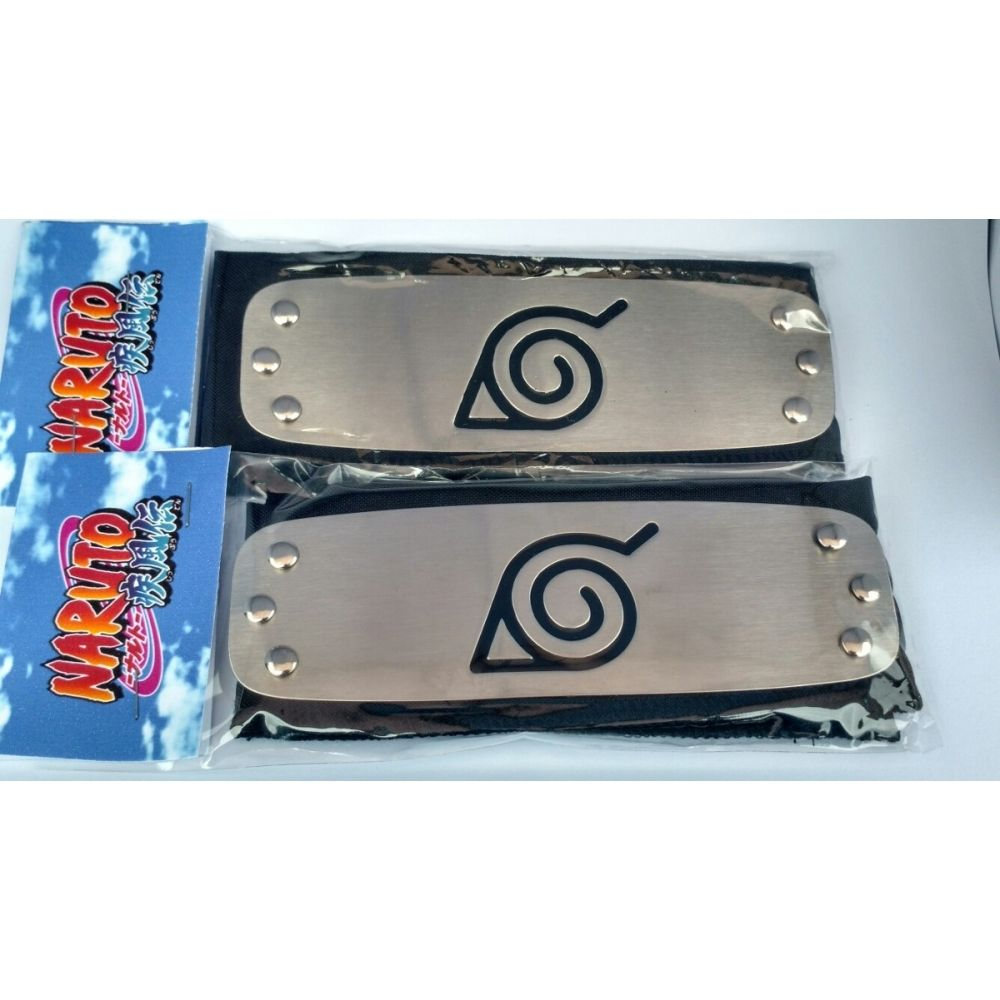
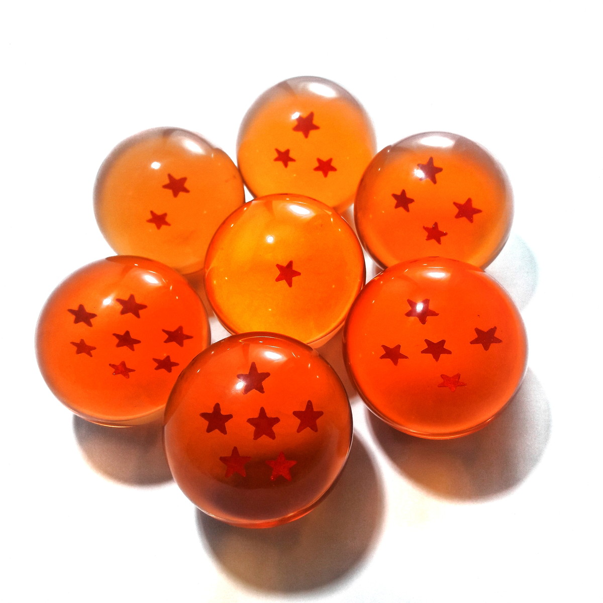
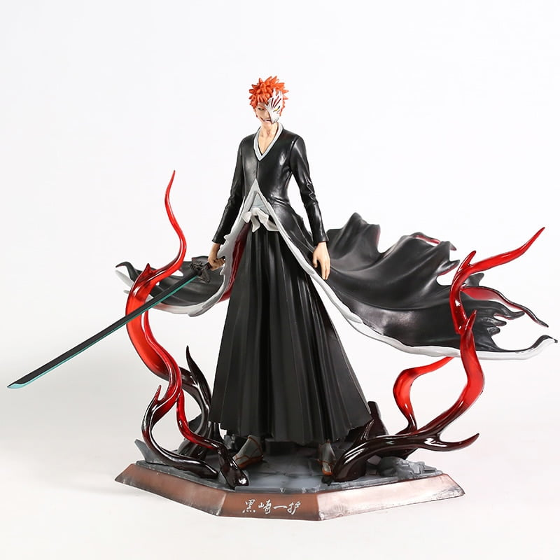

Tamanho: 28Cm
Material: PVC


Otakulandia
| Foto | Descrição | Preço (R$) | Quantidade disponível |
|---|---|---|---|
|  | Bandana Cosplay Naruto, vários modelos, com as melhores vilas do mundo Shinobi, ela é metálica com ótimo acabamento e maleável. Pode ser usada para brincar, fazer cosplay ou festas a fantasia. | 26,32 | 10 |
|  | As esferas do dragão são os artefatos que dão nome à série Dragon Ball. São bolas laranjas e cristalinas que podem invocar o Deus Dragão Shenlong que tem a habilidade de conceder desejos para quem conseguir juntar as sete esferas. | 345,00 | 5 |
|  | Ichigo Kurosaki é um adolescente de 15 anos de idade, que frequenta uma escola de ensino médio na cidade fictícia de Karakura e que tem a capacidade de ver fantasmas. Uma noite, Ichigo encontra uma shinigami chamada Rukia Kuchiki de uma organização secreta chamada Soul Society que são encarregados de enviar almas a vida após a morte. Tamanho: 28Cm Material: PVC |
579,00 | 3 |
|
Essa armadura de leão já foi vestida por Regulus, Kaiser, Micenas, Aioria,eu e outros não conhecidos, mas apenas Ikki de Fênix e Aioria conseguiram despertar ela como kamui | 10.000,00 | 1 |
|
O Going Merry foi projetado por Merry, um empregado da mansão de Kaya e foi entregue ao bando dos chapéus de palha após o término da saga do Capitão Kuro na Vila Slope. Após o término da saga de Arlong o navio ganhou algumas laranjeiras do pomar de Bell-mère. | 1.000.000,00 | 1 |